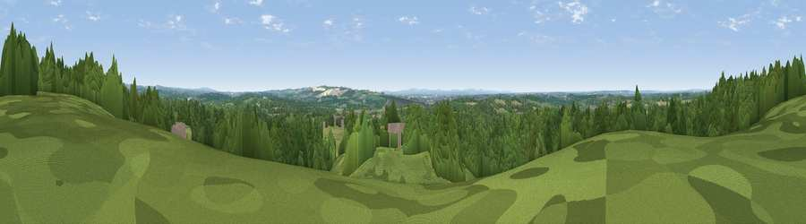

Viewpoint near North Boarhunt
#38263 in England · top 59% of its area beats it · near North Boarhunt · path 243 mWhere it is
The exact computed spot (SU 59375 11675). Click the marker for map links.
Public access: the nearest public right of way is about 243 m away — the final stretch may cross private land. Computed from Natural England's CRoW access layer and OpenStreetMap rights of way — not the legal definitive map. Always verify locally.
The view, rendered

A 360° render of this exact spot computed from the terrain model, tree cover and land cover — summer colours, afternoon light, calibrated against photographs of famous viewpoints. Real trees, hedges and buildings will differ in detail.
The panorama
Grey silhouette: terrain skyline in each direction (720 bearings, Earth curvature and refraction included). Dashed green: skyline with trees (+15 m) and buildings (+8 m) as obstacles. Blue strip: how far the ground is visible on each bearing.
Where the view opens
Wedge length = distance to the farthest visible ground on that bearing (vegetation-aware). Rings at 10, 25 and 50 km.
What fills the view
63% woodland · 25% grassland · 10% cropland · 2% built-up
Angular shares of the visible panorama (visual magnitude), not map area. Landscape diversity 0.42 (0–1 Shannon).
Key numbers
More beautiful places nearby
The staircase of upgrades: each row has a higher view potential than everything closer. Driving times are estimates from straight-line distance, calibrated against real road routing — check an actual route before setting out.
| Place | Direction | Drive | Score |
|---|---|---|---|
| Crockerhill | SW · 2 km | ~5 min | 44.2 |
| Home Down | NE · 6 km | ~13 min | 49.5 |
| Viewpoint near Droxford | N · 7 km | ~14 min | 58.5 |
| Viewpoint near Southwick | SE · 7 km | ~14 min | 74.3 |
| Viewpoint near Southwick | SE · 7 km | ~15 min | 76.6 |
| Viewpoint near Buriton | NE · 15 km | ~27 min | 80.0 |
| Beacon Hill | ENE · 22 km | ~37 min | 85.8 |
| Mottistone Down | SW · 33 km | ~51 min | 87.2 |
50.90151, -1.15701 · source: screening · position refined by local search. Computed location — check access rights before visiting.